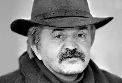

Поет, кіносценарист, толова журі Міжнародного літературного конкурсу "Гранослов" народився 18 серпня 1956 р. у Караганді (Казахстан) в родині засланців. У 1978р. закінчив українське відділення філологічного факультету Київського університету ім. Т. Шевченка. З 1978р. по 1988р. був редактором, завідувачем редакції поезії видавництва "Молодь". З 1988р. по 1992р. — старшим редактором поезії видавництва "Дніпро". З 1992р. працював коментатором, заступником завідувача редакції літературних програм Українського радіо (Національна радіокомпанія України).
З 1999 р. В. Герасим'юк — ведучий літературних програм Національної радіокомпанії України. Він є членом Національної спілки письменників України (з 1983р.), Асоціації українських письменників (з 1996 р.).
В. Герасим'юк є автором поетичних книжок "Смереки" (1982), "Потоки" (1986), "Космацький узір" (1990), "Діти трепети" (1991), "Осінні пси Карпат: Із лірики вісімдесятих" (1998). Передостання збірка була оцінена літературознавцями як одна з найкращих поетичних книжок десятиліття. Герасим'юк — член літературної майстерні "Пси святого Юра". Поет є лауреатом Міжнародної літературної премії "Благовіст" (1993), премії журналу "Сучасність" (1995), літературної премії ім. П. Тичини (1999).